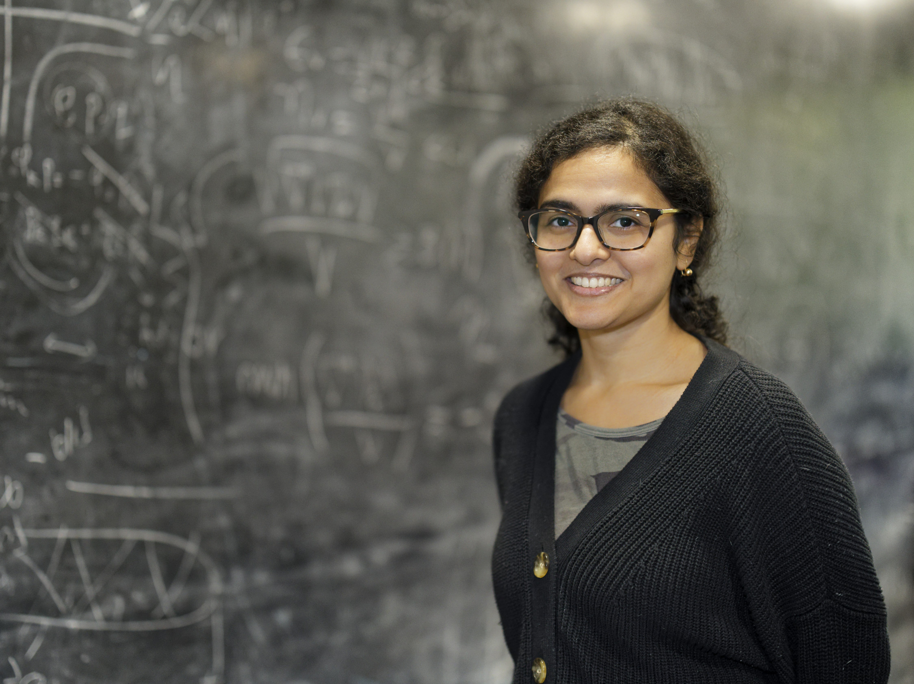

Dr. Payel Mukhopadhyay
Physics-AI independent research fellow, Infosys–Cambridge AI Centre

Research
My research is at the intersection of machine learning and the physical sciences. I came to this from astrophysics - fluid flows around supernovae, neutron star mergers, neutrino physics, cosmic rays - and that background shapes how I think about what ML needs to do to work for fundamental physics problems.
I develop machine learning methods for dynamical systems, including foundation models, ML-accelerated PDE surrogates, and mechanistic interpretability, with applications in a broad range of domains including continuum dynamics and astrophysics.
I currently lead efforts on foundation models for scientific data at Infosys–Cambridge AI lab, Department of Applied Math and Theoretical Physics at Cambridge, and as a member of the Polymathic AI collaboration.
↓ Download CV (PDF)
Publications
For an up-to-date publication list and citation metrics, see Google Scholar .
▶ alphabetical order listing per field convention · * student project under my primary supervision ·
All (18)
AI / ML
Astrophysics/Particle Physics
01
Emergent Transfer of a Physics Foundation Model from Simulation to Laboratory Turbulence
P. Mukhopadhyay, S Nixon, R Watteaux et al.
arxiv:2606.01470
02
Probabilistic Retrofitting of Learned Simulators
Diaconu*, Cranmer, Turner, Marwah & P. Mukhopadhyay
ICML 2026 ICLR 2026 AI&PDE Workshop
03
Walrus: A Cross-Domain Foundation Model for Continuum Dynamics
McCabe, P. Mukhopadhyay, Marwah et al.
★ ICML 2026 Spotlight
04
On the Value of Tokeniser Pretraining in Physics Foundation Models
Sotoudeh*, P. Mukhopadhyay, Ohana, McCabe, Lawrence, Ho, Cranmer
ICLR 2026 AI&PDE Workshop
05
Overtone: Cyclic Patch Modulation for Clean, Efficient, and Flexible Physics Emulators
P. Mukhopadhyay, McCabe, Ohana, Cranmer · 2026
ICLR 2026
06
Physics Steering: Causal Control of Cross-Domain Concepts in a Physics Foundation Model
Fear*, P. Mukhopadhyay, McCabe, Bietti, Cranmer · 2025
NeurIPS 2025 Workshop
07
Predicting Partially Observable Dynamical Systems via Diffusion Models with a Multiscale Inference Scheme
Polymathic AI · 2025
NeurIPS 2025
08
AION-1: Omnimodal Foundation Model for Astronomical Sciences
Polymathic AI · 2025
NeurIPS 2025
09
Angle-Dependent In Situ Fast Flavor Transformations in Post-Neutron-Star-Merger Disks
Lund, P. Mukhopadhyay, Miller, McLaughlin · 2025
ApJL 2025
10
Successful νp-process in Neutrino-Driven Outflows in Core-Collapse Supernovae
▶ Friedland, P. Mukhopadhyay, Patwardhan · 2025
JCAP 2025
11
Compute-Adaptive Surrogate Modeling of Partial Differential Equations
P. Mukhopadhyay, McCabe, Ohana, Cranmer · 2025
ICLR 2025 Workshop
12
The Well: A Large-Scale Collection of Diverse Physics Simulations for Machine Learning
Polymathic AI · 2024
NeurIPS 2024
13
The Time Evolution of Fast Flavor Crossings in Post-Merger Disks Around a Black Hole Remnant
P. Mukhopadhyay, Miller, McLaughlin · 2024
ApJ 2024
14
Cosmic-Ray Re-acceleration at Galactic Wind Termination Shock
P. Mukhopadhyay, Peretti, Globus, Simeon, Blandford · 2023
ApJ 2023
15
Near-Critical Supernova Outflows and Their Neutrino Signatures
▶ Friedland, P. Mukhopadhyay · 2022
Phys.Lett.B 2022
16
Self-Generated Cosmic-Ray Turbulence Can Explain the Morphology of TeV Halos
P. Mukhopadhyay, Linden · 2022
Phys.Rev.D 2022
17
Celestial-Body Focused Dark Matter Annihilation Throughout the Galaxy
▶ Leane, Linden, P. Mukhopadhyay, Toro · 2021
Phys.Rev.D 2021
18
Carter Constant and Superintegrability
P. Mukhopadhyay, Nayak · 2018
IJMPD 2018
19
Quark Stars Admixed with Dark Matter
P. Mukhopadhyay, Bielich · 2016
Phys.Rev.D 2016
Career Trajectory
Experience
Physics-AI Fellow, Assistant Research Professor
May 2025 – present
Independent funding from Infosys–Cambridge AI Centre
DAMTP, University of Cambridge
Neutrino Theory Network Fellow
Oct 2022 – May 2025
UC Berkeley, CA
Independent research fellowship.
Education
Ph.D. Theoretical & Computational Astrophysics
2017–2022
Stanford University
Thesis: Neutrino driven outflows in supernovae — from hydrodynamics to nucleosynthesis.
B.S.–M.S. Dual Degree, Physics
2012–2017
Indian Institute of Science Education and Research, Kolkata, India
Students & Advising
I am open to supervising PhD and masters students. If you're interested in working with me, feel free to get in touch.